{{plot.jobs.length}} Jobs
{{job.id}}: {{job.wallTime}}, {{job.phase}}, {{job.tempSize}}, {{job.tempDir}}
{{ props.row[column.field] }}
{{tag.tag}}
{{ props.row.title }} @{{ props.row.year }}
Chia Calculator
Number of Plots
(of size 101.4GiB, k=32)
Earnings over time
Plots
Space plotted per day
Network Space
Estimated Total Earnings
